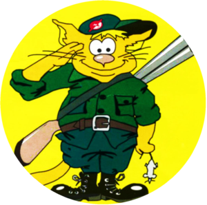

Борьба с грызунами и насекомыми
Ждём вас по будням с 09:00 до 15:30

Контакты
Телефон/факс:
Рабочая электронная почта:
Мы находимся по адресу:
Северо-Казахстанская область,
г. Петропавловск,
ул. Универсальная 3а.
Офис расположен в здании “Центра национальной экспертизы по СКО”
(бывшая Дезинфекционная станция)
О нас
Основной вид деятельности ТОО "Дезинфекция" - услуги дератизации и дезинсекции.
Дератизация - профилактические и истребительные мероприятия, направленные на уничтожение и/или снижение численности синатропных грызунов (мыши, крысы, полёвки).
Дезинсекция - профилактические и истребительные мероприятия сезонного и круглогодичного характера, направленные на уничтожение и/или снижение численности бытовых насекомых (тараканы, мухи, клещи, блохи, муравьи, клопы).
ТОО "Дезинфекция" создано и работает с 1998 года. Старейшее предприятие своего профиля на рынке Северо-Казахстанской области. Некоторые сотрудники работают в этой сфере более 30 лет.
Благодаря практическому опыту, профессиональным знаниям и добросовестному отношению к работе мы всегда можем предложить нашим клиентам решение возникающих проблем. Уничтожаем тараканов, избавляем от мух, комаров и других насекомых, проводим дератизацию помещений. Даём рекомендации о дополнительных возможностях для хозяйствующих субъектов по борьбе с грызунами и насекомыми, по защите помещений от проникновения грызунов и насекомых в помещения из зон их естественного расселения. Проводим барьерные обработки от грызунов.
ТОО "Дезинфекция" реализует бланки личных медицинских книжек установленного образца.